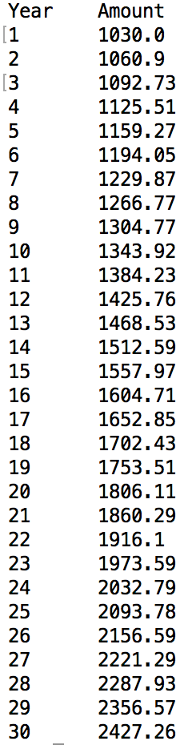

Siguiente: Ejercicios Subir: Talleres Anterior: Talleres
Escriba una función de Python que acepte dos parámetros que representan la cantidad invertida en un certificado de un año de depósito y la tasa de interés anual y devuelva la cantidad en la cuenta después de un año. Por ejemplo, si la cantidad invertida es de 1000 dólares y la tasa de interés anual es de 3.0 por ciento, la función debe devolver 1030. No utilice una función recursiva.
Escriba una función principal que pida al usuario un importe inicial a invertir en un certificado de un año de depósito y la tasa de interés anual, y muestre la cantidad en el certificado de depósito después de cada año durante un número n de años. Suponga que el usuario no deposita o retira dinero de esta cuenta durante los n años.
El algoritmo básico para la función principal es:
1. Ingrese la cantidad inicial a invertir, y almacénela como la cantidad actual
2. Ingrese la tasa anual de interés
3. Repita n veces:
a. LLame la otra función con la cantidad actual y la tasa de interés,
y almacene el valor devuelto en una lista anidada, junto
con el año correspondiente.
4. Llame la función imprimir, para mostrar los valores de la lista
generada en el punto 3, usando el formato sugerido.
Escriba una función que imprima la lista almacenada con el siguiente formato:

Para redondear las cantidades al centavo más cercano, utilice la función round. No se preocupe por los ceros que faltan si el número de centavos es un múltiplo de 10 (por ejemplo 2156.6 está bien).